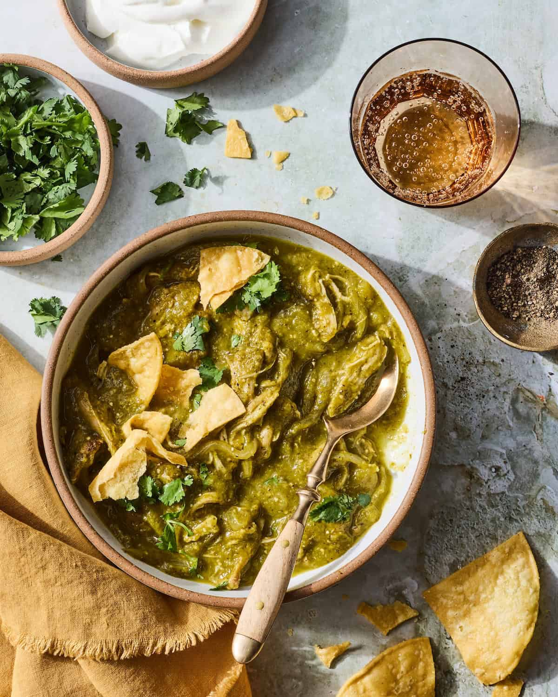

Green Chili Verde Chicken

Just a Quick Overview Before We Start
This version is packed with moist, tender chunks of braised chicken thighs in a balanced sauce that
is rich with umami depth and green chile flavor, but still plenty bright and fresh. And the best part:
You can make it in under half an hour. All it takes is a pressure cooker and some dumping skills.
Recipe Details
- Prep
15 mins
- Cook
25 mins
- Active
10 mins
- Total
40 mins
- Servings
4 to 6 servings
Ingredients You'll Need
- 3 pounds bone-in, skin-on chicken thighs and drumsticks
- 1 pound poblano peppers, roughly chopped, seeds and stems discarded (about 3 peppers)
- 12 ounces tomatillos, husks discarded, quartered (about 4 tomatillos)
- 10 ounces white onion, roughly chopped (about 1 medium)
- 6 ounces Anaheim or Cubanelle peppers, roughly chopped, seeds and stems discarded (about 2 peppers)
- 2 Serrano or jalapeño peppers, roughly chopped, stems discarded
- 6 medium cloves garlic, peeled
- 1 tablespoon whole cumin seeds, toasted and ground
- Kosher salt
- 1/2 cup loosely packed fresh cilantro leaves and fine stems, plus more for garnish
- 1 tablespoon Asian fish sauce, such as Red Boat
- Fresh corn tortillas and lime wedges, for serving
Step-By-Step
- Combine chicken, poblano peppers, tomatillos, onion, Anaheim peppers, Serrano peppers, garlic,
cumin, and a big pinch of salt in a pressure cooker. Heat over high heat until gently sizzling,
then seal pressure cooker, bring to high pressure, and cook for 15 minutes. Release pressure.
- Using tongs, transfer chicken pieces to a bowl and set aside. Add cilantro and fish sauce to remaining
contents of pressure cooker. Blend with an immersion blender or in a countertop blender and season to
taste with salt. Return chicken to sauce, discarding skin and bones and shredding if desired.
- Transfer to a serving platter, garnish with chopped cilantro, and serve immediately with tortillas and lime wedges.